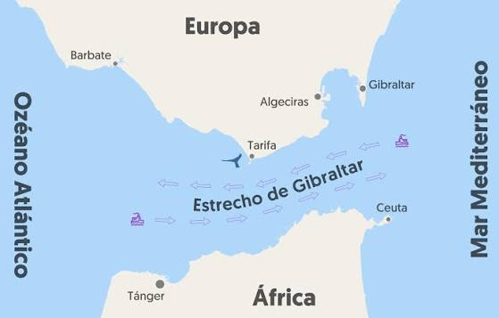
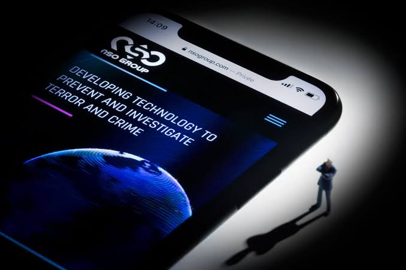
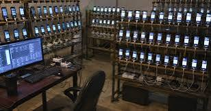

1. Espionaje a España y contexto geopolítico
El ataque de 2021 a los teléfonos de Pedro Sánchez y Margarita Robles, y el reto de atribuir formalmente un ciberataque a un Estado concreto, como Marruecos.
Resumen del podcast sobre espionaje digital y ciberseguridad
El especialista en ciberseguridad Marc Rivero conversa con Uri Sabat sobre el espionaje patrocinado por Estados, la desinformación masiva en redes sociales y los riesgos que la inteligencia artificial trae al terreno de la ciberguerra. Este resumen fue armado con ayuda de NotebookLM a partir del episodio original de YouTube.
Este es el video original que se usó como fuente en NotebookLM.
El ataque de 2021 a los teléfonos de Pedro Sánchez y Margarita Robles, y el reto de atribuir formalmente un ciberataque a un Estado concreto, como Marruecos.
Ataques destructivos ("wipers") pensados solo para inutilizar sistemas, y granjas de bots que difunden noticias falsas para polarizar a la sociedad.
Ataques "zero-click" capaces de infectar un teléfono con un simple SMS, y consejos básicos de ciberhigiene como reiniciar el celular cada semana.
El riesgo de que una IA sin restricciones facilite ciberataques complejos, y el equilibrio necesario entre privacidad y seguridad.
"La guerra en 2026 se puede librar a través de internet: podés desestabilizar una sociedad sin derramar una gota de sangre."
"Lo peligroso de verdad es el zero-click: te llega un SMS y, sin que veas ninguna notificación, ya estás hackeado."
"¿Te fiarías de votar desde tu casa con tu DNI electrónico? Con lo que yo sé, no me fiaría."
Imágenes de referencia (por ahora son esquemas de ejemplo). Reemplazalas en la carpeta
img usando los mismos nombres de archivo.


